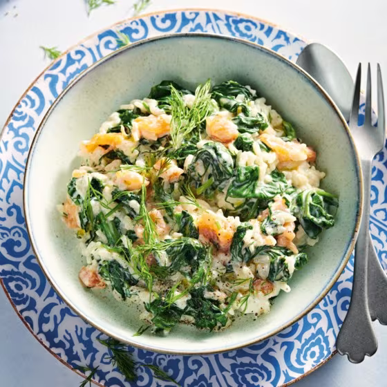

Spinach Risotto with Smoked Salmon

Description
A tasty Risotto made with spinach and smoked salmon flakes. The added mascarpone adds an addiontal creamy texture to the dish with a rich and sweet taste while the salmon and dille adds a little bit of a spicy smokey flavour.
This is the ideal dish for a romantic dinner or a cozy night with friends.
Ingredients
- 2 sjalots
- 1 cube of vegetable stock
- 4 tablespoons of olive oil
- 300g risotto arborio rice
- 125ml of dry white wine
- 400g washed spinach
- 4 stems of dill
- 125g of mascarpone
- 150g of smoked salmon flakes
- freshly ground black pepper
Preparation
- Cut up the sjalots and disolve the vegetable stock in 1 liter of hot water.
- Heat up a pan and saute the sjalot for 1-2 minutes in two tablespoons of olive oil. Add the risotto rice and fry gently until it starts to shine and becomes somewhat glassy.
- Add the wine and let the rice absorb the wine under a soft boil. Afterwards add the stock to the rice in 3-4 portions. Wait with adding the next portion of stock until the rice has fully absorbed the previous portion. Continue cooking the rice like this in about 30 minutes until it's done.
- Heat up a separte pan and add two tablespoons of olive oil. Add the spinach in portions and let it shrink up by evaporting the moisture. In the meantime chop up the dill.
- Take the risotto off the heat and mix in the mascarpone. Then mix in the spinach, salmon and dill. Bring up to flavour with a good dose of freshly ground black pepper.